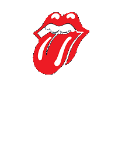

Musiikkivisa: Miten taittuu webbaajalta rock'n roll?

Tervetuloa testaamaan tietojasi pop- ja rockvisaan!
Hänen suosionsa on kasvanut tasaisesti vimeisten vuosien
ajan. Hänen kappaleistaan on tullut megahittejä sekä hänen itsensä, että muiden
esittämänä.
1. Mistä maasta laulaja lauluntekijä Sia Furler on kotoisin?
Australiasta
Irlannista
Norjasta
Chilestä
Irlannista
Norjasta
Chilestä
Vastaus
Australiasta: Sia Furler on australialainen. Hän aloitti uransa 1997, mutta hänen läpimurtonsa tapahtui 2014 kappaleella "Chandelier".2. Kenen naislaulajan läpimurtosingle noin 10 vuotta sitten oli "Just Dance"
Ke$ha
Alicia Keys
Lady Gaga
Colbie Caillat
Alicia Keys
Lady Gaga
Colbie Caillat
Vastaus
Lady Gaga: Lady Gaga (alias Stefani Germanotta) julkaisi debyyttisinglen "Just Dance" jo huhtikuussa 2008, mutta sen suosio kasvoi vähitellen ja vuoden 2009 alussa se nousi listoille useissa maissa. "Poker Face" samalta albumilta, oli eniten myyty single maailmassa vuonna 2009.3. Kuka on kuvan laulaja? "Wrecking Ball" on yksi hänen suurimmista hiteistään?
Charli XCX
Ellie Goulding
Miley Cyrus
Taylor Swift
Ellie Goulding
Miley Cyrus
Taylor Swift
Vastaus
Miley Cyrus: Hän tuli tunnetuksi vuonna 2006 tv-sarjasta "Hannah Montana". Vuonna 2008 hän julkaisi ensimmäisen soololevynsä. Hän on tehnyt kielestään tuotemerkkinsä ja hänen väitetään vakuuttaneen kielensä miljoonasta dollarista, kielensä.

4. Sitten toiseen kielimerkkiin. Miksi Rolling Stones -kitaristia Keith Richardsia on kutsuttu?
The Human Sniff
The Human Whiff
The Human Spliff
The Human Riff
The Human Whiff
The Human Spliff
The Human Riff
Vastaus
The Human Riff: Keith Richrardsin tunnistettavat kitarariffit ovat antaneet hänelle lempinimen "Human Riff", joka oli myös hänestä kertovan dokumenttielokuvan nimi.5. Missä legendaarisessa 1960-luvun yhtyeessa Jim Morrison (ks. visan otsikkokuva) lauloi?
The Yardbirds
The Doors
The Band
The Byrds
The Doors
The Band
The Byrds